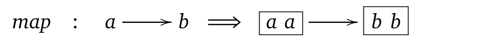
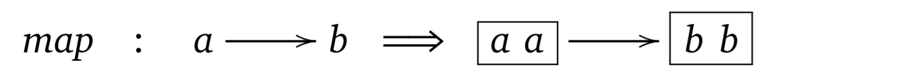
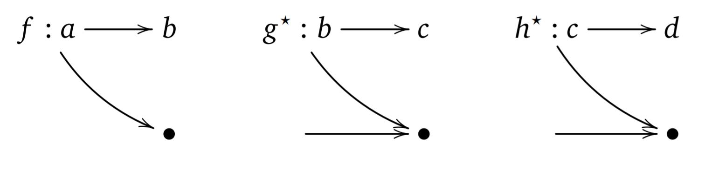
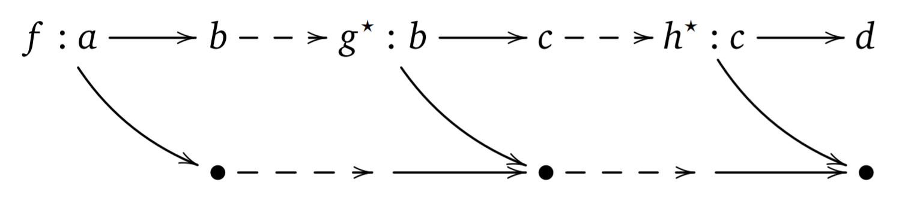
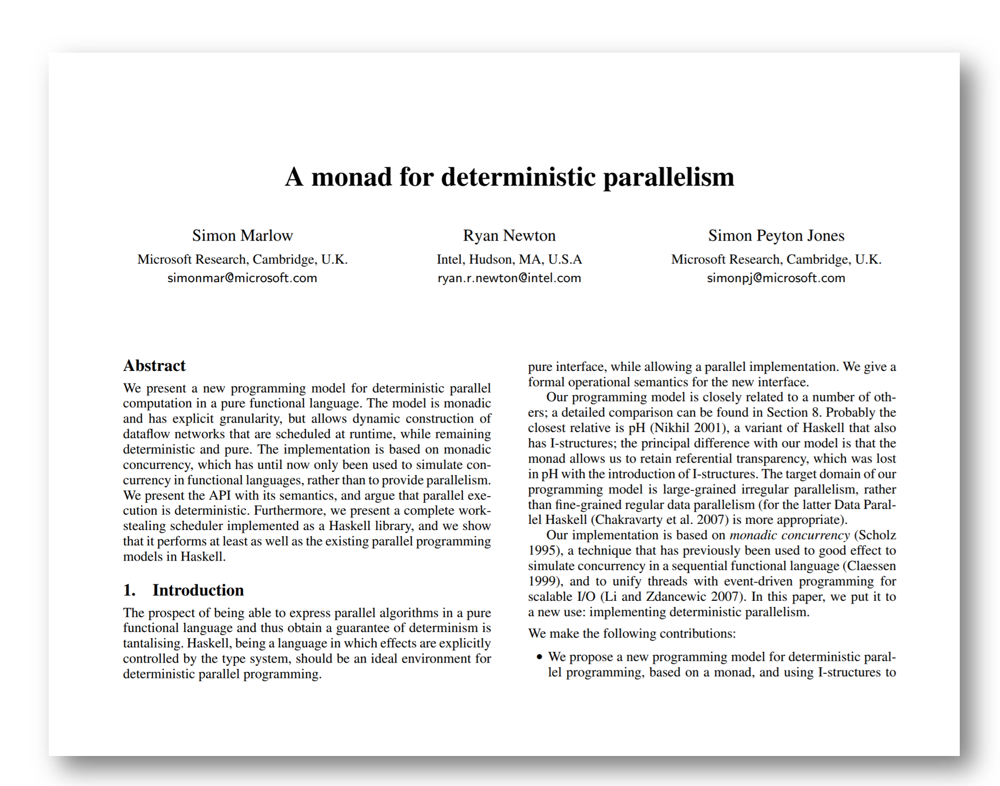

Full name: index.getLength
Full name: Microsoft.FSharp.Core.ExtraTopLevelOperators.async
What we talk about
when we talk about monads

Tomas Petricek, The Alan Turing Institute
tomasp.net | tomas@tomasp.net | @tomaspetricek
\[\definecolor{mc}{RGB}{137,64,96} \newcommand{\mbnd}{>\!\hspace{-0.25em}>\!\hspace{-0.27em}=}\]
A monad is just a monoid in the category
of endofunctors. What is the problem?
What is a monad?
I will not give you an answer!
What do we say when we talk about monads?
I will add philosophical and cognitive context!
Internal history of monads
From category theory to programming

Monads in category theory
A monad over a category \(\mathcal{C}\) is a triple \((T, \eta, \mu)\) where
\(T : \mathcal{C} \rightarrow \mathcal{C}~\) is a functor, \(\eta : {Id}_{\mathcal{C}} \rightarrow T\) and
\(\mu : T^2 \rightarrow T\) are natural transformations such that:\[\begin{array}{l} \mu_{A} \circ T \mu_A = \mu_{A} \circ \mu_{T A} \\ \mu_{A} \circ \eta_{T A} = \mathit{id}_{T A} = \mu_{A} \circ T \eta_{A} \end{array}\]
Monads in programming
A monad is a triple \((M, \mathit{unit}, \mbnd)\) consisting of a type
constructor \(M\) and two operations of the following types:\[\begin{array}{lcl} \mbnd &::& M x \rightarrow (x\rightarrow M y) \rightarrow M y\\ \mathit{unit} &::& x\rightarrow M x\\ \end{array}\]
These operations must satisfy the following laws:
\[\begin{array}{l} \mathit{unit}~a~\mbnd~f ~=~ f a\\ m~\mbnd~\mathit{unit} ~=~ m\\ (m~\mbnd~f)~\mbnd~g ~=~ m~\mbnd~(\lambda x.f x~\mbnd~g) \end{array}\]
What has changed?
Purpose of monads
Reasoning about effects vs. Introducing effects
Kind of entity
A priori knowledge vs. A posteriori knowledge
Explaining monads
Understanding monads using metaphors
Monads as a formal entity
Monad is a data type
Data type
M awith the two operations satisfying monad laws:Operation
returnhas a typea -> M a
Operation>>=has a type(a -> M b) -> (M a -> M b)
Monads as containers
Monad is like a box of things
 



Monads as computations
Monad is like a railway track

Monads as computations
Monad is like a railway track

Monads as computations
Monad is like a railway track
Monads as computations
Monad is like a railway track
Why metaphors matter
One of the principal results in cognitive science is that abstract concepts are typically understood, via metaphor, in terms of more concrete concepts.
(Lakoff & Núñez, 2000)
Embodied cognition
Metaphors link abstract concepts with bodily experience
- Movement formal symbol manipulation
- Inside vs. outside for containers and boxes
- Movement for composing railway tracks
Monads in research
Reasoning about programs with monads
This paper is about logics for reasoning about programs,
in particular for proving equivalence of programs.Moggi (1991)
Origins of algebraic program laws
Intuition about programming constructs
\({\color{mc} \mathit{if}}~\,b~{\color{mc} \mathit{then}}~\,p~{\color{mc} \mathit{else}}~p = p\)
Origins of monad laws
Composition of morphisms in category theory
\((f^\ast \circ g^\ast) \circ h = f^\ast \circ (g^\ast \circ h)\)
\(\mathit{unit}^\ast \circ f = f = f^\ast \circ \mathit{unit}\)
Reasoning about programs with monads
- Monadic query comprehensions (Grust, 2004)
- Monad laws + concrete monads (Gibbons, Hinze, 2011)
- Refactoring using monad laws (To appear... never?)
Algol research paradigm
One of the goals of the Algol programme was to utilize the resources of logic to increase the confidence (...) in the correctness of a program.
(Priestley, 2011)
Monads in programming
From abstractions to syntactic sugar
Code reuse via monadic abstraction
1:
|
|
1: 2: 3: |
|
Sequencing of effects with monads
1:
|
|
1: 2: 3: 4: |
|
Non-standard computations
1: 2: 3: 4: 5: 6: |
|
Useful syntactic sugar
1:
|
|
1: 2: 3: |
|
How programming concepts evolve
Mathematics does not grow through increase of the number of established theorems, but through improvement by speculation and criticism, by the method of proofs and refutations.
Lakatos (1979)
How monads evolve
The nature of programming entities
The nature of programming entities
Metaphorical level
Intuitively understanding concepts
Technical level
Implementing things in programs
Formal level
Reasoning and proving about programs
Shifts and adaptations
Motivation at formal level
Monads are logic for reasoning about effects
Used differently for implementation
Language abstraction for encoding effects
Shift at implementation level
Abstraction and notation for effects
Causes adaptation at metaphorical level
Think of monads as railway tracks
Sociology of monads
Monads as religious objects

Uses of monads
A case for wider understanding
When monads are not the right tool
Monad is a resource of logic
Monads are cool and exciting
Monads are discovered, not invented!
Monad can be the uninteresting part
The Par monad for modelling parallel computations
- Spawn a new process
spawn : Par a -> Par (IVar a) - Read and write shared variables
get : IVar a -> Par aandput : IVar a -> a -> Par ()
Also supports monadic return : a -> Par a
and >>= : (a -> Par b) -> (Par a -> Par b)
Monad can be the uninteresting part
Monad as tempting harmful abstraction
Parser a reads input string and produces value a
-
Parse one thing and then another thing
Parser a -> Parser b -> Parser (a * b) -
Try parsing in two ways, use the first success
Parser a -> Parser a -> Parser a
Parsers can be extended to support monadic >>= and return.
Monad as tempting harmful abstraction
The normal disadvantages of conventional [monadic] parsers,
such as their lack of speed and their poor error reporting are remedied.The techniques [do not] extend to monadic parsers. [T]he monadic formu-lation [causes] the evaluation of the parser construction over and over (...).
Swierstra & Duponcheel (1996)
Monad as the wrong structure
Wadge proposed that the semantics of the dataflow language Lucid (...), could be structured by a monad.
Ten years later, Uustalu and Vene gave a semantics for Lucid in terms of a comonad, and stated that "dataflow cannot be structured with monads".
Orchard (2012)
Monad as the wrong structure
- Has the right type of join operation
- Does not provide plumbing
1:
|
|
Conclusions
What we talk about when we talk about monads
What we talk about when we talk about monads
Strong roots in the Algol paradigm
Meaning evolves at three levels
Metaphors are a fundamental part
Tomas Petricek, The Alan Turing Institute
tomasp.net | tomas@tomasp.net | @tomaspetricek